というわけで小豆島の洞窟寺院巡り、まずは島四国八十八ヶ所霊場の
一番札所場がいきなりカッコイイ洞窟寺院なのでそこから。
小豆島は西を向いた犬のようなカタチと言われるが、それに則って言えばワンちゃんの後ろ足に相当する場所にある。
島の中心部である土庄の港は犬の首輪に相当する部分。つまり中心地からはかなり離れた場所なのだ。
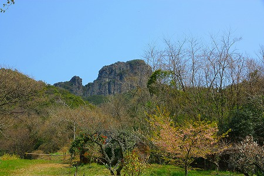
グランドキャニオンのような山塊を目指す。
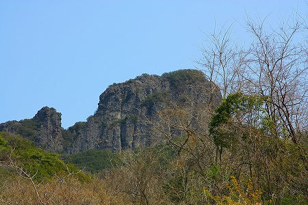
寺への道中、すでに浅い洞窟があり、そこには何故か大分の臼杵石仏のレプリカ（というか土産物）が飾られていた。
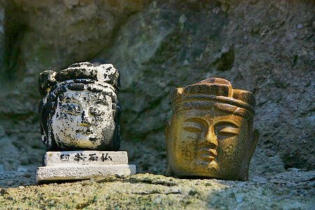
何故小豆島で臼杵の石仏なんだろう？
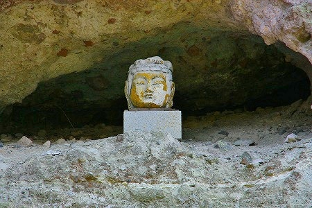
まあ、いずれも瀬戸内海の文化圏ではあるが、多分そんなことは関係ないのだろう。
お手製の木彫り像もいい味だしていた。
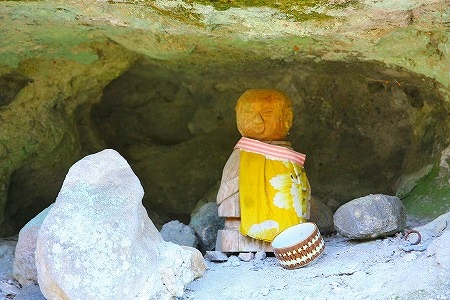
お地蔵さんの前掛けにベイブレード。
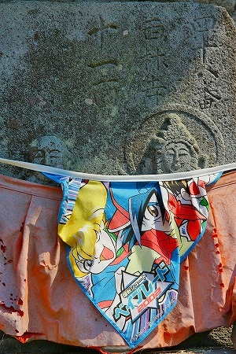
てなとこ見てると洞窟の入り口が見えてきた。
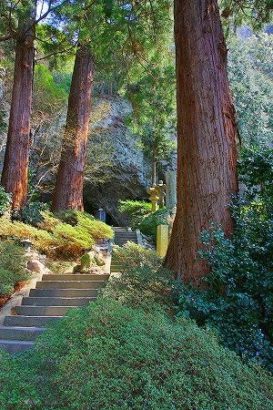
どーですか。お客さん！
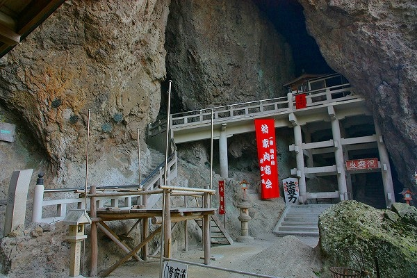
不定形な洞窟の中にコンクリートの構造体をムリクリ押し込めである感じ。
それは図らずも
太古のうねうねとしたアニミズム的な世界観と近代のマッシヴな空間がぶつかり合っているような素敵な空間だった。
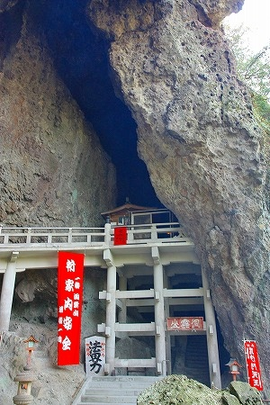
この寺の画像をどこかで見たことがある、とお感じになった諸兄。鋭い！
この寺は当サイトの姉妹サイトである
日本すきま漫遊記のトップページに掲載されている寺である。
同サイトの管理人のへりおすさんから小豆島の洞窟寺院について色々と伺っていたので大いに参考にさせてもらったというわけなのだ（つかほとんど受け売りです）。
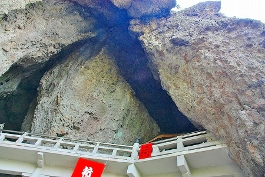
私の大好物である
懸け造りと洞窟寺院が一体化したこの光景。見ているだけで興奮しちゃいますねー。
「法界力」の看板が効いてる。功徳力、加持力と脇に書かれてあった。
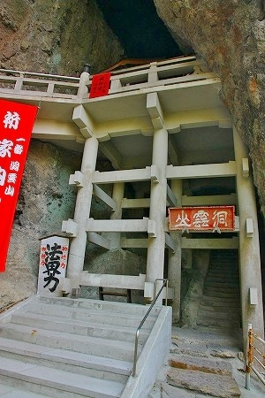
んで↑右下の「洞雲山」という額の下を潜っていざ入洞！
歴史を感じさせる階段を上っていく。結構薄暗い。
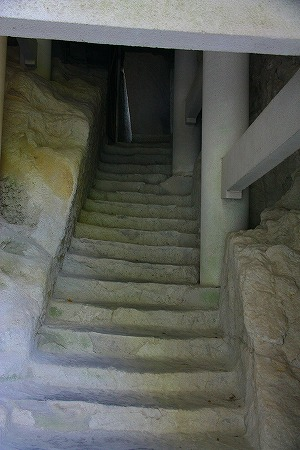
石段を上りきると、右手から光が差し込んでくる。
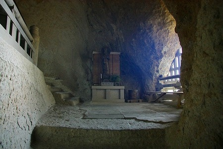
丁度洞窟の壁が窓のように空いている。
そこからは遥か遠くの海まで見渡せる。絶景かな。
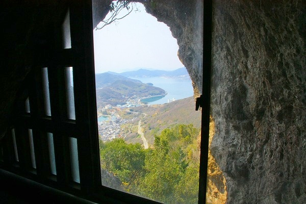
さらに数段上ると八角のお堂が建っている。
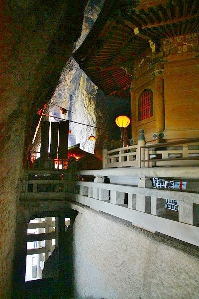
洞内に巡礼者の詠む御詠歌が響き渡る。
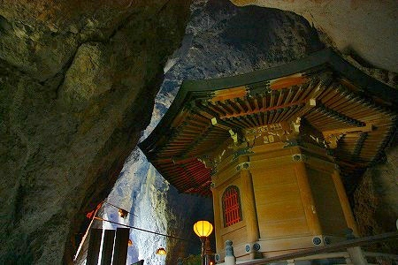
毘沙門天を祀ってあるようだ。
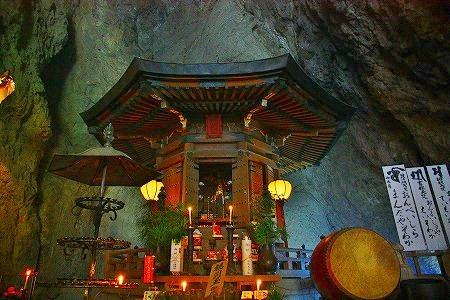
上を見上げると洞窟の天井付近に板がわたしてある。
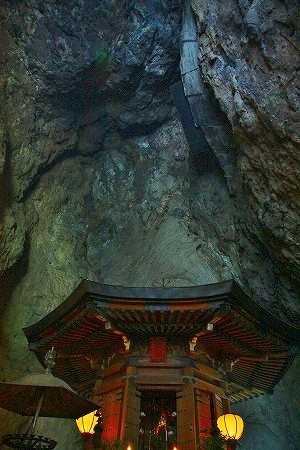
えええ、あそまで行けるの？凄くない？
と軽く興奮したが、どうも岩壁に付いた水がこの辺から真下の八角堂におちるのでその雫を除けるための板のようだ。
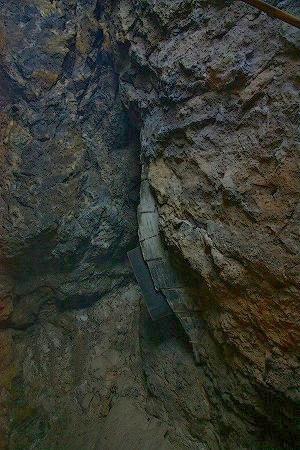
それにしてもあの板はどうやって設置したんだろう？
このような場所に重機を入れて工事をしたのだろうか。
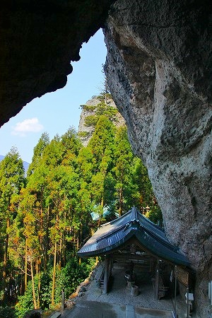
全くもって驚く他ないのだが、この島を巡る内に似たような洞窟寺院が多数あることを知るのである。
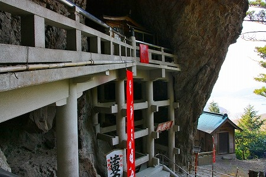
帰り道の途中に小さい社のようなものがあった。
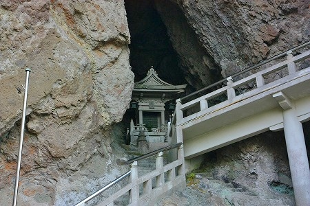
階段をほぼ下りきると木造のテラスのようなところがある。
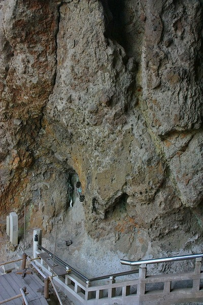
画面中央の岩肌に夏至の時にだけ観音様が現れるのだという。
時間にして数秒。そのときだけ
観音サマの形をした光がこの岩に射すので夏至観音と呼ばれている。
もちろんこの日は夏至でもないのでいくら目を凝らしても観音の「か」の字も見当たらなかった。
年に一度見れるかどうかもわからない観音サマなんて、何ともロマンチックな話やのう。